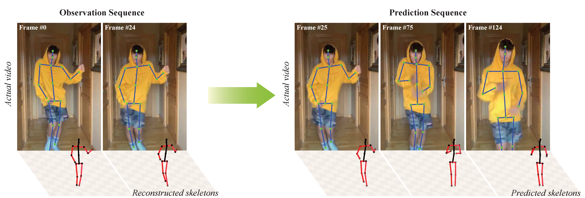
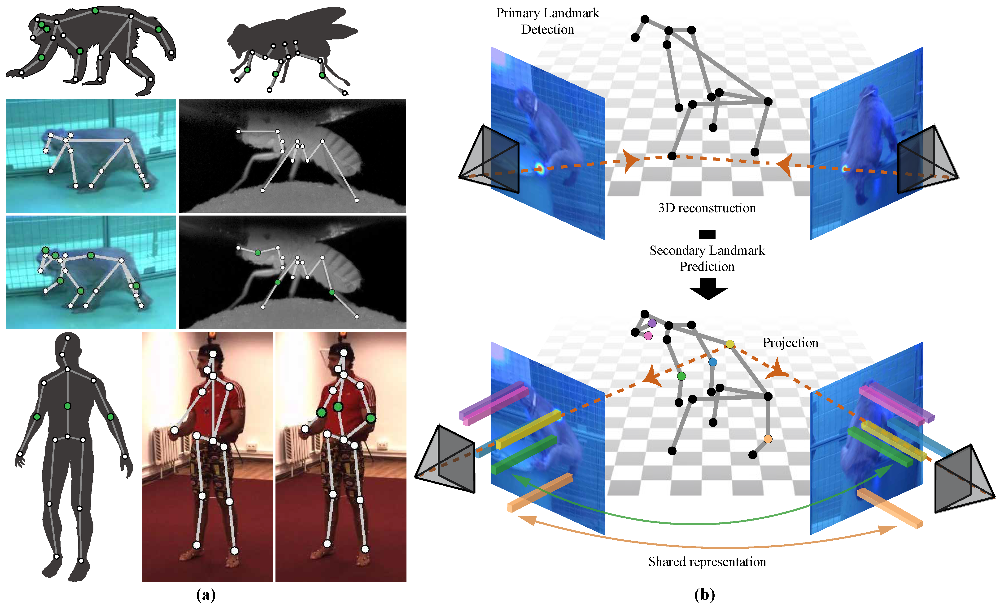
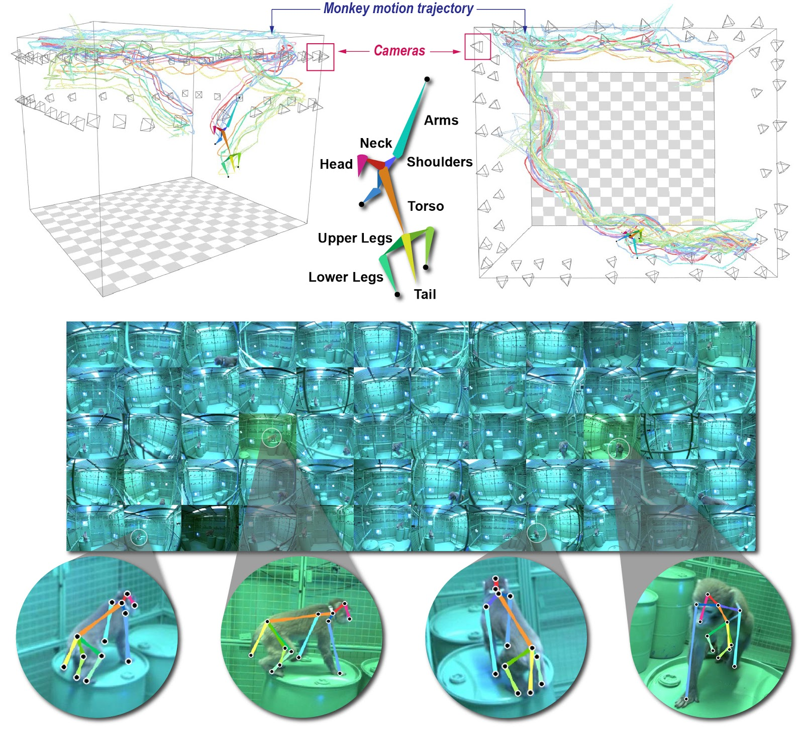
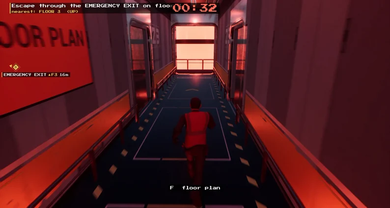

I recover 3D structure and motion from cameras, grounded in multi-view geometry. I did my Ph.D. at the University of Minnesota, advised by Dr. Hyun Soo Park, Dr. Jan Zimmermann, and Dr. Stephen J. Guy.
My thesis built a 62-camera capture system, used geometric consistency to learn 3D pose with minimal supervision, and lifted single-view video into forecastable 3D motion.
Today I’m extending that to egocentric perception: reconstructing a scene with Gaussian splatting, fitting SMPL-X bodies within it, and recovering a person’s own view of the world.



Note: the online version supports JSON files only. NPY conversion requires running the tool locally.

My role: world building (map design and creation), character design and animation, and the puzzles for the final level.